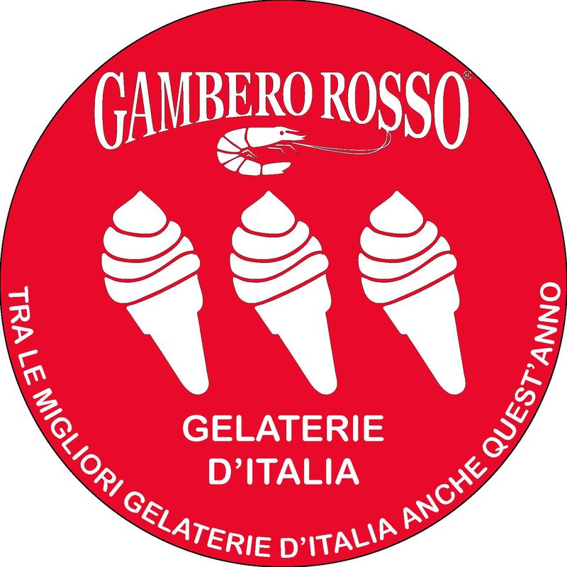
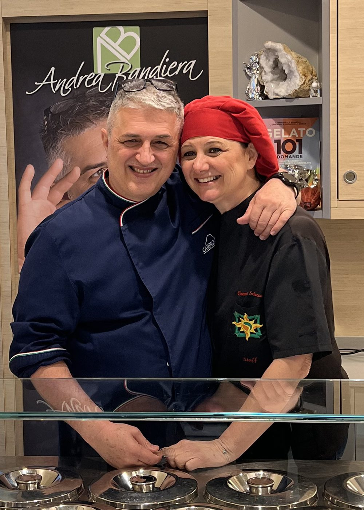
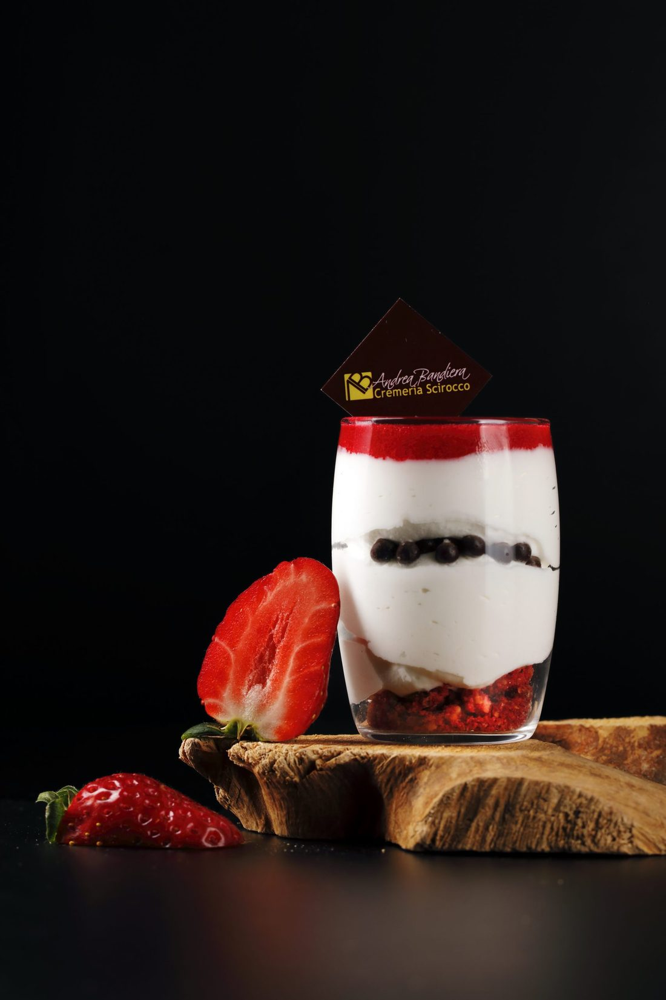
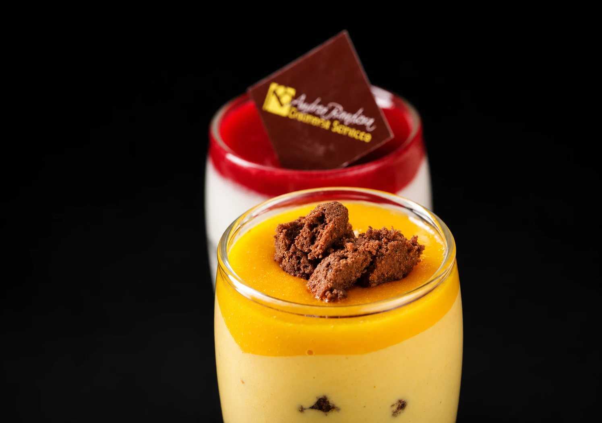
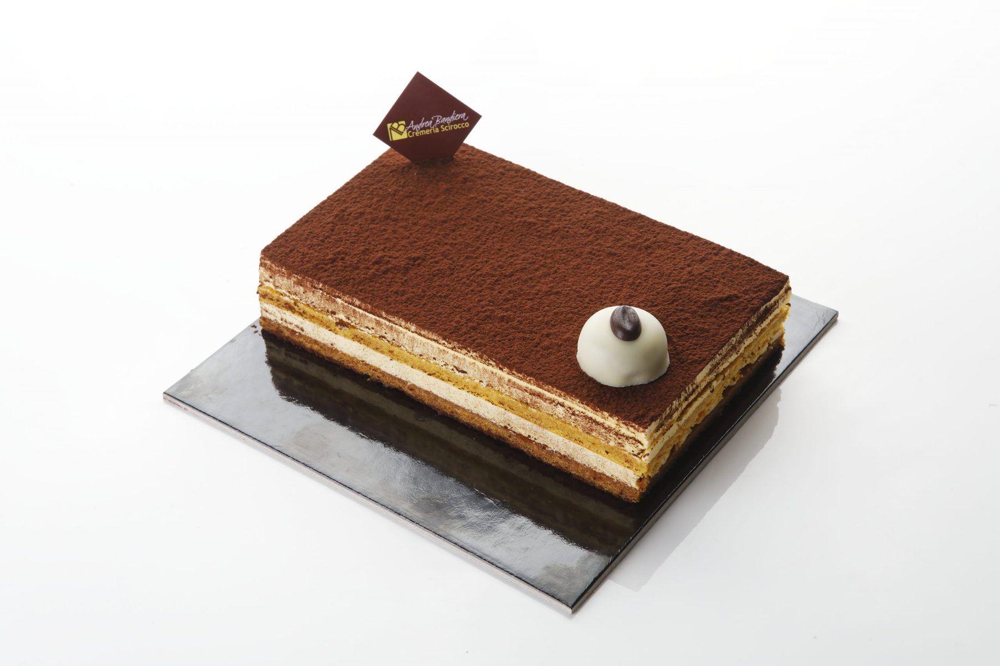
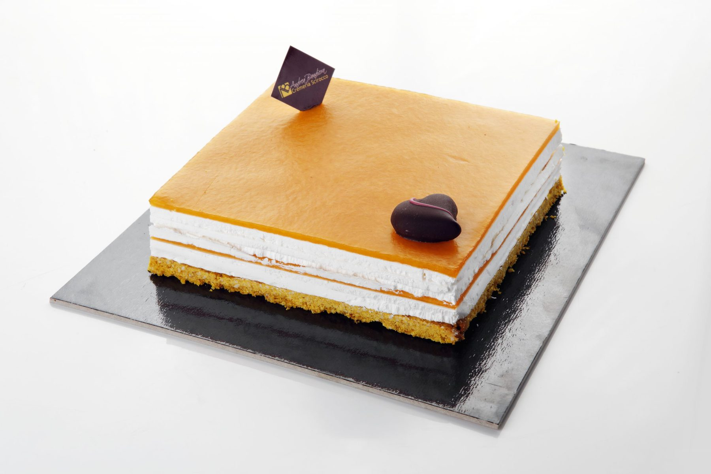
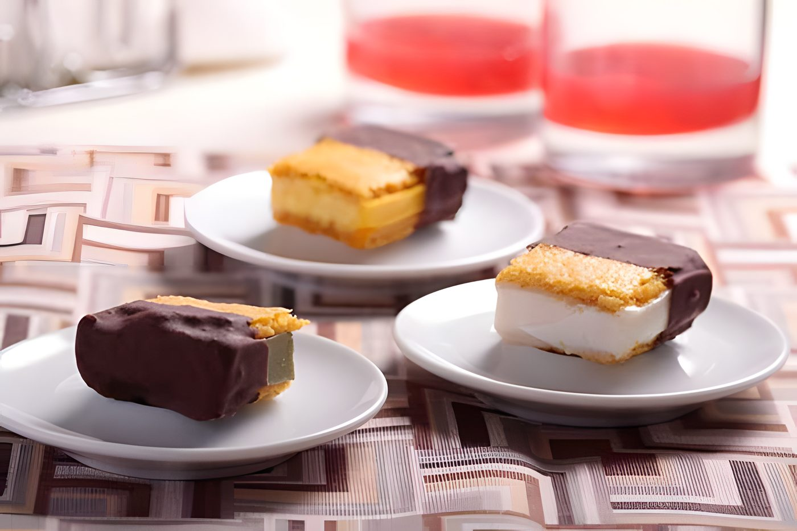
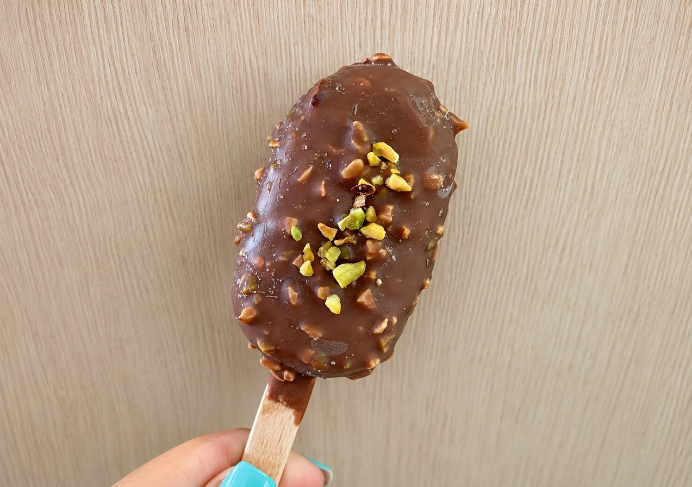

Almonds & Gorgonzola
Bitter and sweet almond blended with Gorgonzola. The flavour that surprises (almost) everyone.
Best savoury flavour 2018
Creams made with local milk, sorbets with over 50% fruit and savoury flavours you have never tasted. Everything made by us, in our open-view workshop in via Barelli, Bologna.


Cremeria Scirocco was born in spring 2004 from an idea of Andrea Bandiera, during a trip to Sicily among granitas and Sicilian gelato. The workshop in via Barelli opened on 18 March 2005. The core ideas are simple:
Flavours change with the seasons and with our customers’ requests, for the best freshness and quality.
No preservatives, colourings, artificial flavourings or hydrogenated fats. All fruit gelato is dairy-free.
Gelato, semifreddi and sorbets are made in a fully open-view workshop. We are happy to answer all your questions.
“If you have an idea and I have an idea and we exchange these ideas, then each of us will have two ideas.”George Bernard Shaw · the Cremeria’s motto
At the counter you’ll find creams, sorbets and two or three savoury flavours in rotation. These are the ones our customers talk about most.
Bitter and sweet almond blended with Gorgonzola. The flavour that surprises (almost) everyone.
Best savoury flavour 2018Pine nuts, almonds, pistachio, lemon zest, basil, extra virgin olive oil and salt.
SavourySicilian pistachio: truly green, long-lasting flavour, zero compromises.
CreamClassic zabaglione with Marsala aged over 20 years: a trip down memory lane.
House classicTonda Gentile hazelnut from Alta Langa: elegant roast, full and lasting flavour.
CreamSorbet with bergamot, lemon, orange, cashews and bitter almond. A touch of blue spirulina.
No milk · no eggsIt all starts from our gelato: cakes, semifreddi in reusable glass jars, gelato bars coated in Valrhona chocolate, granitas and ice lollies.

Creams and sorbets with local milk, Bourbon vanilla and over 50% fruit.
Discover
Almonds & Gorgonzola, Pecorino & honey, Parmigiano & figs: gelato joins the menu.
Discover
Ice cream cakes made to order for birthdays, christenings, weddings and dinners with friends.
Discover
Brevi, Tesorini, Lacrime and little glasses: a bite-size end to the evening.
DiscoverOver 50% fresh fruit, no syrups. Try the “Sciroccata”.
Discover
Strawberry, lime & ginger, white mint, yogurt & strawberry: in rotation.
DiscoverWe pasteurise milk, cream and eggs ourselves, with a latest-generation Carpigiani pasteuriser. Everything else comes from small local producers.
We don’t use hydrogenated fats, which cheaply add body and shelf life at the expense of the health of whoever eats them.
Every recipe is balanced between sugars, fats and proteins: the food chemistry Andrea has been studying for almost twenty years.
Raw milk from a farm 10 km away, cream from a local cooperative, fresh eggs pasteurised by us, Bourbon vanilla from Madagascar.
All our fruit gelato is sorbet: fruit, mineral water, sugars and a few grams of natural thickeners. Nothing else, and no dairy.
No artificial colourings: the colour of the gelato is the colour of its ingredients.
No artificial flavourings or synthetic emulsifiers. The only thickeners are locust bean gum and xanthan.
The highest rating in Gambero Rosso’s Gelaterie d’Italia guide. Plus the special award for the best savoury gelato in 2018.
Reviews are shown in their original Italian, as written on Google.
Made entirely by us with our own gelato, on a thin gluten-free sponge. Two flavours of your choice, packed for transport.
Yes. All our sorbets are milk- and lactose-free, and in rotation there are also vegan creams, such as pistachio or hazelnut, made with water or plant milks like oat milk.
Our ice cream cakes have a thin layer of gluten-free sponge, made by us. If you have an allergy, ask us first: we’ll tell you exactly what’s in every cake.
Of course: we make them to order for birthdays, christenings, weddings, anniversaries or a dinner with friends. Usually two flavours of your choice in two layers. Call us or write to us from the contact page.
Yes, we make custom flavours, savoury ones too, for lunches and dinners from 3 kg.
Every flavour has its own up-to-date sheet with ingredients and allergens: see the ingredients list. On the Today’s flavours page you’ll also see the allergen icons.
Every day except Wednesday: Monday to Friday 12–8 pm, Saturday and Sunday 10 am–8 pm.
Outside the historic centre, with easy parking. The workshop is open-view: you can watch your gelato being made and ask us anything you like.
Opening hours
| Monday | 12–20 |
| Tuesday | 12–20 |
| Wednesday | Closed |
| Thursday | 12–20 |
| Friday | 12–20 |
| Saturday | 10–20 |
| Sunday | 10–20 |
Loading the map…
Open in Google Maps